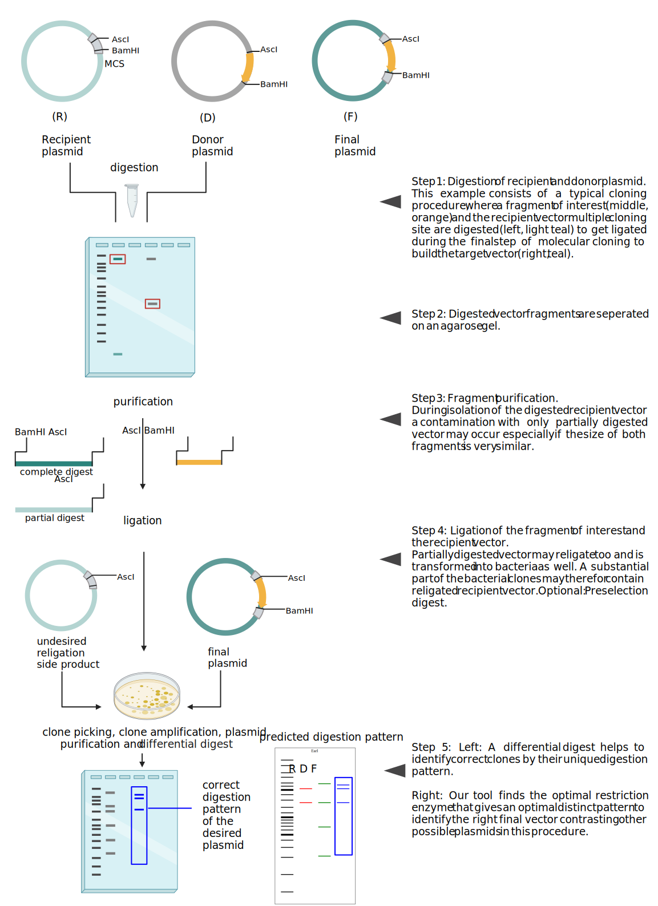

Molecular cloning is a basic and very useful method in molecular biology.
Cloning allows combining DNA fragments from different sources into
a single DNA molecule, such as a plasmid. Plasmids can be easily amplified
in E. coli and also be used to express proteins in bacteria and
eukaryotic cells. Plasmids can also be used, for example, as p-element
vectors to create transgenic fruit flies.
One application for molecular cloning is to replace a gene in a plasmid by
another gene. Another is adding several functional elements into a plasmid.
For example, a p-element vector has not only a plasmid backbone and
the gene of interest, but also a promoter for tissue-specific expression,
a 3'UTR with a polyadenylation signal, and a p-element for random genomic
integration. Such a plasmid may have some 10 000 base pairs.
After cloning, the picked clones must be verified, since the enzymes may
not cut their target DNA completely, so that a recipient plasmid can be easily
religated. This is especially true for recipient plasmids with a multiple cloning
site as target and a short cutout fragment so that the incompletely digested
recipient cannot be separated from the completely digested recipient plasmid
on an agarose gel. Clones must also be verified for cloning strategies where the
donor DNA can be inserted in both direction, either because the overhangs are
compatible for that or because it is blunt end ligation.
Here we provide a free online tool to find fitting enzymes for distinguishing
between different DNA sequences. Simply give up to three sequences you want to
distinguish, and we will give you the restriction pattern for suitable enzymes
with the most dissimilar pattern first.
Data security:
No sequence data will be uploaded, everything is processed in your local browser with JavaScript.
Introduction
In molecular cloning, restriction enzymes are used to cut out a fragment of DNA from a Donor Vector to
ligate it into a previously opened Recipient Vector. The DNA fragments are separated on an agarose gel.
However, restriction enzymes may digest incompletely, leaving not only backbone and insert, but also linearized DNA molecules in the reaction.
A linearized plasmid of 10000 bp can be easily separated from a 1000 bp cutout fragment but is difficult to separate from a 9000 bp
backbone fragment. The problem is even worse if the cut out fragment is just a few basepairs from a multiple cloning site. Therefore, even after gel isolation linearized fragments may be left, and used in the ligation.
A single fragment may be ligated with itself, than two are ligated together. But also cloning strategies where the overhangs are compatible for both orientations orientations including blunt end cloning require checking the identity of the picked clones.
The clones can be identified by their restriction patterns in a text digest, easily. The challenge here is finding the right enzymes. An easy way to find such enzymes is provided by diffdigester.uni-jena.de.

Figure 1: A typical procedure in molecular cloning that ends a with a differential digest to identify a clone by the restriction pattern with a suitable enzyme. Diffdigester finds the such enzymes for testing your clones.
You have to provide two or three sequences in plain text of fasta format. It does not matter whether you sequence is in upper or lower case, it will be converted to lower case for internal use. You can copy and paste the sequences into the web form or load them from a file.
You may compare the original recipient, the insert and the final plasmid.
An example of a plain text DNA sequence in 5-3 direction:
AGCTAGTCGATGCTATATTTAGCGATGCTAGTCGACTAGCTAAGGCTAGTGATCGAGCTGATCTATCGGATCTAGCGATCGATCGACTAC
What do you get?
You enter two or three DNA sequences, and indicate whether they are linear or circular. You get a gel with the restriction band patterns for each restriction enzyme that cuts your DNA sequences according to the selected settings. If you order "By dissimilarity", which is the default, the first enzymes will be those with most distinguishable patterns so that you can pick the best enzyme for your test digest to verify your clones.
How does it work?
The sequences you provide are processed with JavaScript. No sequence is uploaded to the server. All sequences remain in your browser.
The JavaScript program uses regular expressions to search for the recognition sequences of restriction enzymes from the Rebase database. The resulting digest patterns differ by the length of the DNA fragments, which is a one dimensional value and thus we score the patterns with the Shortest Path Root Measure and sort them afterwards.
Disclaimer
For research use only. Not for diagnostic or therapeutic applications.
Literature
About cloning, restriction enzymes, and their application:
Matsumura, I. (2015) Why Johnny can’t clone: Common pitfalls and not so common solutions. BioTechniques, 59, 4-13.
Spear, M.A. (2000) Efficient DNA subcloning through selective restriction endonuclease digestion. BioTechniques, 28, 660-668.
Xu, Q., Zhang, D. and Downie, B. (2005) Rapid and Efficient Subcloning of DNA Without Dephosphorylation or Gel Electrophoresis. Applied Biochemistry and Biotechnology - Part B Molecular Biotechnology, 29, 111-117.
Nathans, D. and Smith, H.O. (1975) Restriction endonucleases in the analysis and restructuring of dna molecules. Annu Rev Biochem, 44, 273-293.
Roberts, R.J., Vincze, T., Posfai, J., Macelis, D. (2023) REBASE: a database for DNA restriction and modification: enzymes, genes and genomes Nucleic Acids Res, 51 (D1):D629-D630
Tolmachov O. Designing plasmid vectors. Methods Mol Biol. 2009;542:117-29.
About p-vector cloning:
Townson, S.M., Chang, B.S., Salcedo, E., Chadwell, L.V., Pierce, N.E. and Britt, S.G. (1998) Honeybee blue- and ultraviolet-sensitive opsins: cloning, heterologous expression in Drosophila, and physiological characterization. J Neurosci, 18, 2412-2422.
Knox, B.E., Salcedo, E., Mathiesz, K., Schaefer, J. Chou, W.H., Chadwell, L.V., Smith, W.C., Britt, S.G., Barlow, R.B. (2003) Heterologous expression of Limulus rhodopsin. Journal of Biological Chemistry, 278, 40493-40502
Quick Guide
Load your DNA sequences from a file or paste them into the fields, and check the associated box if the sequence is circular. As an example, sequence 1 may be the sequence of the recipient plasmid, sequence 2 of the recipient plasmid, and sequence 3 of the final plasmid with the insert if the cloning strategy is designed so that all three could be picked as clone. The sequences can be raw or in fasta format and also be quite long since they are not uploaded to the server, but processed in the local browser. If more then one fasta sequence is in one text field, the first one is used and the others are ignored. The sequences should only contain the four canonical bases A, C, G, and T, case is ignored. Characters that are not letters in the English alphabet are ignored. Sequences for instance may come with a base pair index on the start of every new line. If a sequence contains another letter then A, C, G, or T, a warning is displayed below the “Submit and digest” button on submission. We recommend fixing this problem, since DiffDigester cannot know what to do with an ambiguous base such as N.
The settings allow you to limit the enzymes that are shown. The option "Minimum number of fragments" only shows enzymes that give at least the minimum number of fragments for each given sequence. This allows to exclude enzymes that do not cut any of the given sequences. The option "Maximum number of fragments" shows only enzymes that give at most the maximum number of fragments for each sequence. This allows to keep the number of fragments down as patterns with to many fragments are hard to recognize and distinguish. The options minimum and maximum fragment sizes restrict the results shown to enzymes that only give fragments whose sizes are within the given values. The option "Minimum fragment size on gel" allows to cut the gel at the given size in basepairs. Since the sizes are displayed logarithmically, there is otherwise a lot of empty space shown. Note that this option hides bands that are smaller, if the "Minimum fragment size" is smaller. In the image below are the default values show for the options.
The results can be shown in different orders, which are shown in the image below. They are "By Dissimilarity", "By Similarity", "Alphabetical" and "Reverse alphabetical". Since a diff digestion should differentiate between two DNA species the "By Dissimilarity" option is the default to show the most dissimilar digestion pattern first. Though reversing the order might also be useful, or just ordering the results alphabetical by enzyme name.
Choose the restriction enzymes you want to use for searching. For instance if you want to exclude some enzymes, select them in the “Enzymes to use” list box and move them with the arrow over to the “Enzyme to exclude” list box. You can use the shift and CTRL (CMD on a Mac) keys to select more than one enzyme at once. Alternatively, you can provide a text file containing the enzymes (format in the right panel). The file should contain one enzyme per row, and unknown enzymes will be ignored. DiffDigester will warn about the first unknown enzyme, it encounters. You can ignore this warning safely. In addition, you can save the list of enzymes for reuse or documentation.
Click “Submit and Digest” to run the analysis. DiffDigester checks your inputs for the correct format and shows a warning if any characters in the English alphabet other than ‘ATGC’ are detected (arrow in the figure below). Characters that are not part of the English alphabet are ignored, such as basepair indices at the beginning of a line.
Your results will be displayed as mock gels in cartoon style for each enzyme that produces fragments according to the settings. Below is a gel for the enzyme TstI, the sequences used are from Example 1, which can be loaded from the Load example buttons. The first lane contains a DNA ladder with black bands, which are annotated with their sizes in basepairs. The second lane contains the bands produced from sequence 1 in red; the third lane bands from sequence 2 in green; and the fourth lane bands from sequence 3 in blue. Note that the minimum fragment size that was used for the gel in the image below was 50 bp, however this TstI also produces a fragment that is smaller then 50 bp and thus is not displayed. If a sequence is circular that means not cut then it is displayed as it were cut.
Examples
Example 1: Replacing a fluorophore gene by another gene of interest and an oligo adapter.
This cloning example is based on replacing a fluorophore gene by another gene of interest and an adapter oligo to bridge the non-compatible restriction enzymes XhoI and HindIII. Recipient and donor plasmid are digested with two different combinations of restriction enzymes to generate fragments for the ligation procedure. PspOMI and NotI generate compatible overhangs, which is not true for XhoI and HindIII. For that reason, an adapter oligo with compatible overhangs for both enzymes was added during ligation to get the final plasmid. Out tool suggests the enzyme NcoI to create digestion patterns of all three plasmid (R, D, F), that are easily distinguishable. In comparison to the predicted digestion pattern, the agarose gel image is displayed.
Example 2: Replacing a fluorophore gene by another fluorophore gene amplified by PCR.
The recipient plasmid, encoding EGFP, and the PCR product of the fluorophore tdTomato are digested by the restriction enzymes XhoI and XbaI. The ligation of both fragments results in the final tdTomato encoding plasmid. A digestion of isolated bacterial clones with AvaI offers the opportunity to identify correct clones by their digestion pattern.
{kind=link}
{kind=link}
{kind=link}
{kind=link}
{kind=link}
{kind=link}
{kind=link}
{kind=link}